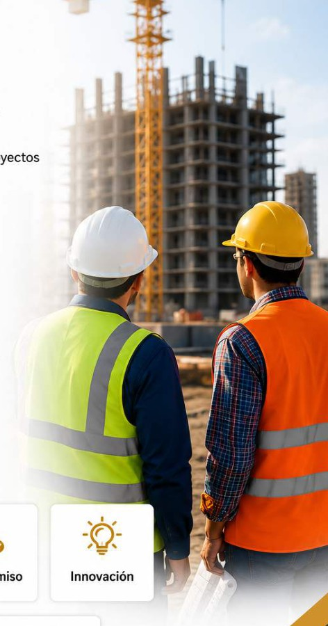
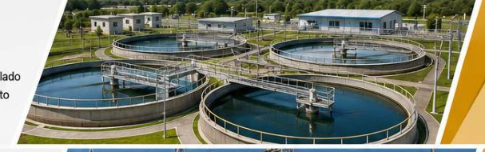
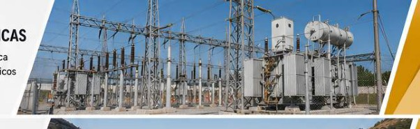
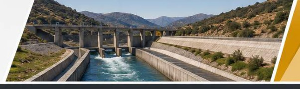

Misión
Brindar servicios especializados de ingeniería, consultoría y ejecución de obras mediante soluciones integrales, innovadoras y sostenibles.
Ingeniería · Consultoría · Ejecución de obras
Soluciones integrales para proyectos de infraestructura pública y privada, desde la planificación y los estudios hasta la supervisión, ejecución y cierre.
Excelencia técnica
Soluciones orientadas a resultados.
Gestión integral
Desde estudios hasta ejecución.
Seguridad
Control y prevención en cada etapa.
Sostenibilidad
Infraestructura con enfoque responsable.

Quiénes somos
RADMARTE S.A.C. es una firma peruana especializada en servicios de ingeniería, consultoría y ejecución de obras. Su enfoque integra planificación, diseño, supervisión y construcción para proyectos de infraestructura pública y privada.
El trabajo se orienta a la excelencia técnica, la innovación, el cumplimiento normativo y la mejora continua, con soluciones adaptadas a las necesidades de cada proyecto.
Brindar servicios especializados de ingeniería, consultoría y ejecución de obras mediante soluciones integrales, innovadoras y sostenibles.
Ser una empresa referente a nivel nacional por su excelencia técnica, innovación, cumplimiento y aporte al desarrollo sostenible.
Qué hacemos
Capacidad técnica para formular, diseñar, supervisar y ejecutar proyectos, con control de calidad y orientación a resultados.
Formulación y evaluación de proyectos para la toma de decisiones y la definición de alternativas técnicas.
Desarrollo integral de expedientes y documentación técnica conforme a los requerimientos del proyecto.
Diseño de ingeniería, estudios complementarios y definición técnica para proyectos de infraestructura.
Supervisión de estudios, expedientes técnicos y ejecución de obras con seguimiento de calidad y cumplimiento.
Planificación, monitoreo y control técnico para apoyar el cumplimiento de objetivos, plazos y entregables.
Construcción y ejecución con enfoque en seguridad, eficiencia, calidad y cumplimiento de estándares técnicos.
Especialidades de intervención
La oferta técnica abarca cinco líneas principales de intervención, alineadas con proyectos urbanos, viales, hidráulicos y energéticos.
Infraestructura urbana, edificaciones y equipamientos de uso institucional.
Carreteras, pavimentos, puentes y obras vinculadas a sistemas de transporte.
Agua potable, alcantarillado y sistemas de tratamiento de aguas.

Infraestructura energética y sistemas electromecánicos para diferentes proyectos.

Canales, reservorios e infraestructura hidráulica para riego y regulación.

Alcance de intervención
Una estructura de trabajo que acompaña las principales etapas del ciclo de inversión y ejecución de infraestructura.
Nuestra forma de trabajar
Certificaciones y respaldos
La presentación pública se concentra en el estándar y el alcance general, sin exponer datos registrales, direcciones, firmas ni datos de contacto.
Inscripción vigente como consultor de obras en especialidades vinculadas a edificaciones, vialidad, saneamiento, electromecánica e infraestructura hidráulica.
Evaluación aprobada para ejecución de obras civiles, con calificación sobresaliente en el proceso de homologación presentado.
Hablemos de tu proyecto
Completa el formulario y envía tu consulta directamente por WhatsApp. Atención al +51 971 811 833.